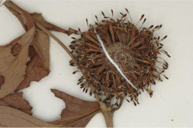
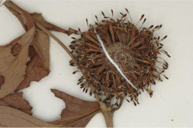

Deciduous trees, up to 20 m tall.
20 ಮೀ. ಎತ್ತರದವರೆಗಿನ ಎಲೆಉದುರು ಮಾದರಿಯ ಮರಗಳು.
Deciduous trees, up to 20 m tall.
இலையுதிர் மரம், 20 மீ. உயரம் வரை வளரக்கூடியது.
Bark grey, smooth and thin irregularly scaly when mature.
ತೊಗಟೆ ಬೂದು ಬಣ್ಣದಲ್ಲಿದ್ದು ನಯ ಹಾಗೂ ತೆಳುವಾಗಿದ್ದು ಬಲಿತಾಗ ಅನಿಯತವಾದ ಚಕ್ಕೆ ರೂಪದಲ್ಲಿರುತ್ತದೆ.
Bark grey, smooth and thin irregularly scaly when mature.
மரத்தின் பட்டை சாம்பல் நிறமானது, வழுவழுப்பானது, முதிரும் போது ஒழுங்கற்ற செதில்களாக உதிருபவை.
Young branchlets angular to subterete, glabrous.
ಕಿರುಕೊಂಬೆಗಳು ಕೋನಯುಕ್ತದಿಂದ ಉಪದುಂಡಾದ ಆಕಾರದಲ್ಲಿದ್ದು ರೋಮರಹಿತವಾಗಿರುತ್ತವೆ
Young branchlets angular to subterete, glabrous.
சிறிய நுனிக்கிளைகள் குறுக்குவெட்டுத் தோற்றத்தில் கோணங்களுடையது முதல் குறுக்குவெட்டுத் தோற்றத்தில் கிட்டதட்ட வளையமானது, உரோமங்களற்றது.
Leaves simple, opposite, decussate; stipules foliacous with keeled back, interpetiolar, caducous and leaving scar; petioles 1-4 cm long, canaliculate in cross section, glabrous; lamina 16 x 10 cm, ovate, elliptic-obovate to orbiculate, apex abruptly acuminate with blunt tip, rarely acute, base acute to attenuate to subcordate, margin entire, coriaceous, glabrous; midrib flat above; secondary_nerves 6-10 pairs, hairy domatia present at axils; tertiary_nerves distantly obliquely reticulo-percurrent.
ಎಲೆಗಳು ಸರಳವಾಗಿದ್ದು ಕತ್ತರಿಯಾಕಾರದ ಅಭಿಮುಖ ಜೋಡನಾ ವ್ಯವಸ್ಥೆಯಲ್ಲಿರುತ್ತವೆ; ಕಾವಿನೆಲೆಗಳು ಎಲೆ ರೂಪಿಗಳಾಗಿದ್ದು ಹಡಗಿನಾಕಾರದ ಹಿಂಬದಿಯನ್ನು ಹೊಂದಿರುತ್ತವೆ ಮತ್ತು ತೊಟ್ಟುಗಳ ನಡುವೆ ಇರುತ್ತವೆ ಮತ್ತು ಉದರಿದಾಗ ಗುರುತನ್ನು ಉಳಿಸುತ್ತವೆ;ತೊಟ್ಟು 1 ರಿಂದ 4 ಸೆಂ.ಮೀ.ವರೆಗಿನ ಉದ್ದವಿದ್ದು, ಅಡ್ಡ ಸೀಳಿದಾಗ ಕಾಲುವೆ ಗೆರೆ ಆಕಾರ ಹೊಂದಿದ್ದು, ರೋಮರಹಿತವಾಗಿರುತ್ತವೆ;ಪತ್ರಗಳು 16 X 10 ಸೆಂ.ಮೀ. ಗಾತ್ರ ಹೊಂದಿದ್ದು ಅಂಡವೃತ್ತ -ಬುಗುರಿಯ ಆಕಾರ ಹೊಂದಿದ್ದು,ಮೊಂಡಾಗ್ರವುಳ್ಳ ಥಟ್ಟನೆ ಕ್ರಮೇಣ ಚೂಪಾಗುವ,ಮಾದರಿಯ ತುದಿ, ಚೂಪಾದುದರಿಂದ ಒಳಬಾಗಿದ,ಅಥವಾ ಉಪ-ಹೃದಯಾಕಾರದವರೆಗಿನ ಮಾದರಿಯ ಬುಡ, ನಯವಾದ ಅಂಚು,ತೊಗಲನ್ನೋಲುವ ಮೇಲ್ಮೈ ಹೊಂದಿದ್ದು ರೋಮರಹಿತವಾಗಿರುತ್ತವೆ;ಮಧ್ಯನಾಳ ಪತ್ರದ ಮೇಲ್ಭಾಗದಲ್ಲಿ ಚಪ್ಪಟೆಯಾಗಿರುತ್ತದೆ;ಎರಡನೇ ದರ್ಜೆಯ ನಾಳಗಳು 6 ರಿಂದ10 ಜೋಡಿಗಳಿದ್ದು ಅಕ್ಷಸ್ಥ ಸಹಜೀವಿ ಗೂಡುಗಳ ಸಮೇತವಿರುತ್ತವೆ;ಮೂರನೇ ದರ್ಜೆಯ ನಾಳಗಳು ಹೆಚ್ಚಿನ ಅಂತರ ಹೊಂದಿದ್ದು ಓರೆಯಾಗಿ ಎಲೆಯ ದಿಂಡಿಗೆ ಅಡ್ಡವಾಗಿ ಕೂಡುತ್ತವೆ.
Leaves simple, opposite, decussate; stipules foliacous with keeled back, interpetiolar, caducous and leaving scar; petioles 1-4 cm long, canaliculate in cross section, glabrous; lamina 16 x 10 cm, ovate, elliptic-obovate to orbiculate, apex abruptly acuminate with blunt tip, rarely acute, base acute to attenuate to subcordate, margin entire, coriaceous, glabrous; midrib flat above; secondary_nerves 6-10 pairs, hairy domatia present at axils; tertiary_nerves distantly obliquely reticulo-percurrent.
இலைகள் தனித்தவை, எதிரடுக்கமானவை, குறுக்குமறுக்கானவை; இலையடிச்செதில் இலைப் போன்றது அதன் தளம் படகு போன்றது, இலையடிச்செதில் இருஇலைக்காம்பிற்கு நடுவே (இண்டர்பீட்டியோலார்) உடையது, எளிதில் உதிரக்கூடியது மற்றும் தழும்புகளை ஏற்படுத்துகின்றன; இலைக்காம்பு 1-4 செ.மீ. நீளமானது, குறுக்குவெட்டுத் தோற்றத்தில் கேனாலிகுலேட், உரோமங்களற்றது; இலை அலகு 16 x 10 செ.மீ., முட்டை வடிவானது, நீள்வட்டம்-தலைகீழ் முட்டை வடிவானது முதல் ஆர்பிக்குலார், அலகின் நுனி சிறிது அதிக்கூரியதுடன் அதன் முனை மழுங்கியது, அரிதாக கூரியது, அலகின் தளம் கூரியது முதல் அட்டனுவேட் முதல் சிறிய இதய வடிவானது, அலகின் விளிம்பு முழுமையானது, கோரியேசியஸ், உரோமங்களற்றது; மையநரம்பு மேற்புறத்தில் அலகின் பரப்பிற்கு சமமானது; இரண்டாம் நிலை நரம்புகள் 6-10 ஜோடிகள், உரோமங்களுடைய டொமேசியா நரம்புகளின் கோணங்களில் உடையது; மூன்றாம் நிலை நரம்புகள் தளம் நோக்கிய இணையான அகன்ற பெர்க்கரண்ட்.
Inflorescence terminal head; flowers sessile, cream-white; calyx lobes short.
ಪುಷ್ಪಮಂಜರಿಗಳು ತುದಿಯಲ್ಲಿನ ಗೋಳಾಕಾರ ಮಂಜರಿ ಮಾದರಿಯವು;ಹೂಗಳು ತೊಟ್ಟುರಹಿತವಾಗಿದ್ದು ಕೆನೆ-ಬಿಳಿ ಬಣ್ಣದಲ್ಲಿರುತ್ತವೆ;ಪುಷ್ಪಪಾತ್ರೆಯ ಎಸಳುಗಳು ಸಣ್ಣ ಗಾತ್ರದವು.
Inflorescence terminal head; flowers sessile, cream-white; calyx lobes short.
மஞ்சரி தண்டின் நுனியில் காணப்படும் சீரமஞ்சரி; மலர்கள் காம்பற்றது, கீரிம்-வெள்ளை நிறமானது; புல்லி இதழ்கள் குட்டையானது.
Capsules, arranged in globose heads, each with 2-folicular cocci; seeds many, winged.
ಸಂಪುಟ ಫಲಗಳು ದುಂಡನೆಯ ಗೋಳಾಕಾರದಲ್ಲಿ ಜೋಡನೆಯಾಗಿರುತ್ತವೆ,ಪ್ರತಿಯೊಂದು ಸಂಪುಟ ಫಲದಲ್ಲಿ 2 ಮರಿ ಸೋತಫಲಗಳಿರುತ್ತವೆ;ಬೀಜಗಳ ಸಂಖ್ಯೆ ಹಲವಾರು ಇದ್ದು ರೆಕ್ಕೆಗಳ ಸಮೇತವಿರುತ್ತವೆ.
Capsules, arranged in globose heads, each with 2-folicular cocci; seeds many, winged.
வெடிகனி (கேப்சியூல்) கோள வடிவமான சீரமஞ்சரியில் அமைந்தவை, ஒர் கனி இரண்டு இலைப் போன்ற அமைப்பு கொண்ட உருண்ட வடிவுடையது (காக்கை); விதைகள் எண்ணற்றது, இறகுடையது.
 
